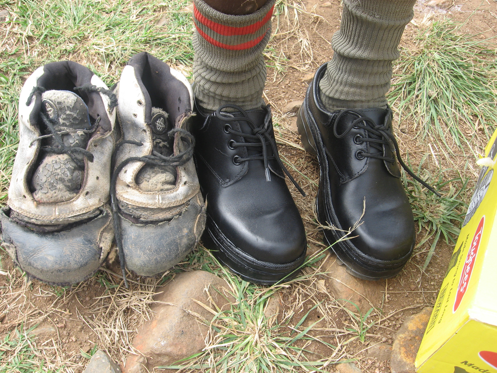
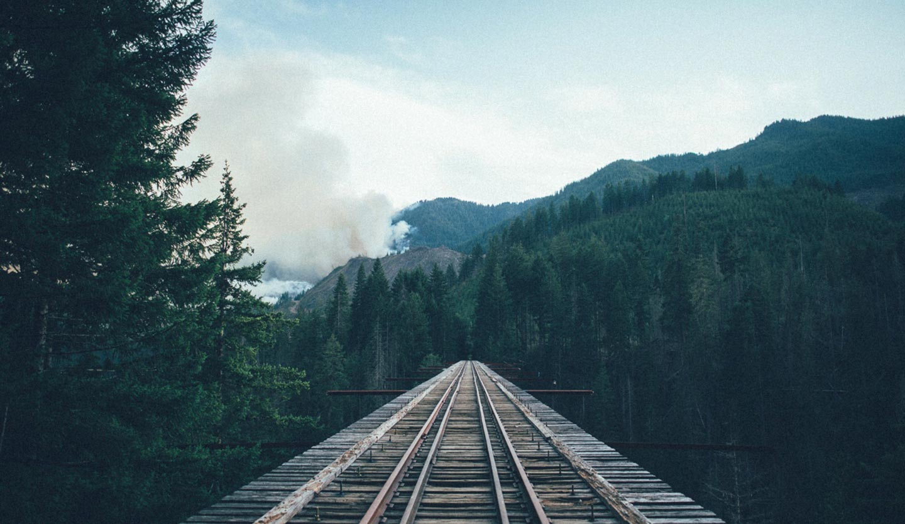

Meet the Team: Nik, Zosia, Jordan, Marcus and Arjun
Mission Statement
Our goal is to provide the same quality of materials to the children in Kenya that we have available in North America so that they may have all the needed tools to
achieve a high level of education and a future career. Although we are just starting
up, we hope to develop our organization to a stable level so that regular shipments
of supplies can be made each year.
flash_on
Nikola Viktorov
group
Zosia Prus-Czarnecka
settings
Jordan Titosky
settings
Marcus Stack
settings
Arjun Kalburgi
Students can't learn without supplies.

Contact Us
We accept both monetary and material donations. All money will first go to paying
for the shipment of the Sea‐Can container ($15 000) and any leftover funds will go
towards purchasing new supplies. In terms of material donations, we are primarily
looking for school supplies such as backpacks, pencils, paper, notebooks, crayons,
etc. Books in English for all ages will also be accepted however we ask that you do
not send us textbooks as Point of Grace Academy already follows a fixed curriculum.
If you would like to donate other items, we accept non‐perishable food, clothing
(especially running shoes), and furniture. For miscellaneous items, please contact us
with your idea so that we can ensure it will be put to good use.
Scroll for more

About Us
We are a group of university students who have been incredibly lucky to receive the
quality of education that we have. Over the years, we’ve noticed that kids in our
community often throw away school supplies that are almost in mint condition. Why
not put these to better use? We have partnered with Point of Grace Academy, a K‐12
school in Kenya started up by Reverend Dennis Meeker and his wife. They have
done an incredible job of saving children from poverty and giving them not only a
home and food, but also an education and a chance at going to university. There is
however, a shortage of basic supplies such as pencils, notebooks and desks. We are
currently collecting unwanted school supplies from local schools in Edmonton,
Canada and are hoping to send our first Sea‐Can full of furniture, school supplies
and food to Kenya by June 2016.
Nikola Viktorov
Nikola is in his third year of chemical engineering and also
the project manager of EcoCar; a student vehicle team which designs and
builds a fuel cell car to race internationally for efficiency. Nikola owes some
of his opportunities to the education he has received in Canada and hopes to
improve access to education for students around the world. When not busy
studying or working, Nikola spends his time traveling.
Zosia Prus-Czarnecka
Zosia is a 3rd year undergraduate student at the
University of Alberta with a major in biological sciences and a minor in
Spanish. She hopes to one day become a pediatric cardiac surgeon. In her
spare time, she volunteers with the Canadian Ski Patrol, works as a ski
instructor and loves to travel and sail.
Jordan Titosky
Jordan is currently working towards his MSc in Mechanical
Engineering at the University of Alberta. He is currently in his second year of
this program and is anticipating to graduate in June 2016. Jordan is a
member of a number of organizations in the community, including the
Canadian Ski Patrol, and the Edmonton Football Officials association, where
he is currently a member of the executive and hopes to one day officiate in
the CFL. This year Jordan applied to the Faculty of Medicine to pursue his
goal to become a cardiac surgeon.
Marcus Stack
Ciao is an app that allows you to better utilize the world around you by helping you turn the strangers nearby into acquaintances for your needs. Ciao is very well explained in the Devpost.
Ciao was originally built during Hack the North, an international hackathon in Waterloo, ON. The Ciao that came out of the hackathon is an Ionic App and uses Facebook and Firebase to get and keep data. This method is less than ideal and I hope to work on Ciao more someday once I learn Android Development. Ciao can be produced much better as a native application, unfortunately my partner and I didn't have enough knowledge at the time to go this route during the competition.
Arjun Kalburgi
Arjun is a third year Computer Engineer at the University of Alberta.
Heavily involved in numerous activities, Arjun looks to grow as a person and
developer to hopefully own his own company one day ‐ creating solutions for
the world around us. Learn more on his website: arjunkalburgi.com